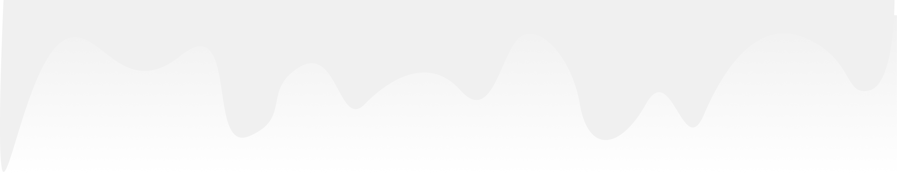
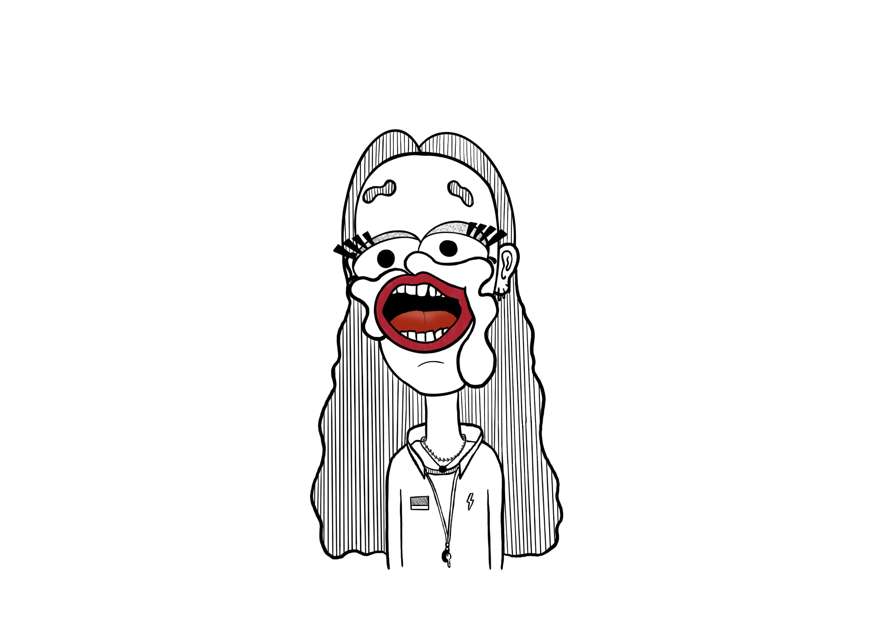
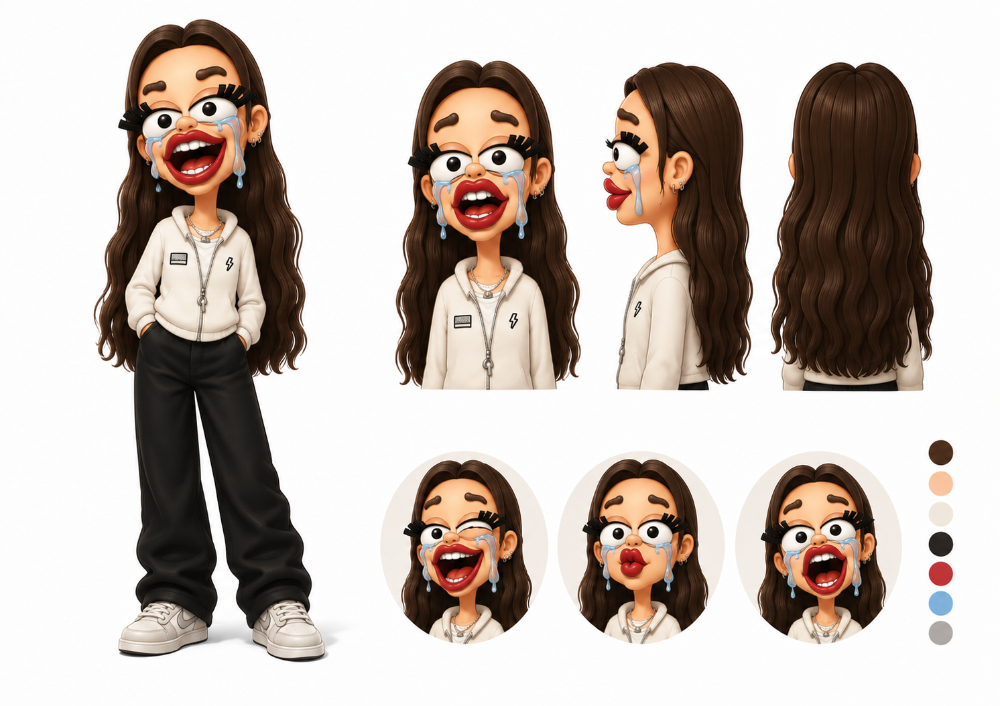

HELLO, I'M ANN-SOFIE
Multimedia Designer Student
Design · UX/UI · Web · Visual Communication · Character Design

HER ER NOGLE AF MINE
PROJEKTER
JEG HAR
LAVET FOR NYLIGT


CHARACTER DESIGN
I min fritid kan jeg godt lide at tegne mennesker på sjove og anderledes måder - og derefter udvikle dem til karakterdesigns.
Jeg synes, det er spændende at give hver karakter sit eget udtryk, personlighed og små detaljer. Og så se dem komme til livs efter!
STORCENTER NORD - FLYER
Storcenter Nord akvariet var et projekt, hvor opgaven var at udvikle et bud på en mere spændende og interaktiv oplevelse til den eksisterende touchskærm nede ved akvariet i kælderen.
Dertil skulle vi også udarbejde en flyer som brugerne kan tage med sig efter besøget. Flyeren skal kommunikere i en tone of voice som er tilegnet målgruppen og designes så man kan se en rød tråd mellem interface og flyer.
Jeg lærte at arbejde med event-baseret JavaScript og fik mere erfaring med at kombinere UX/UI med interaktive og multimediale løsninger.


MUSEUM OVARTACI - PLAKAT
Museum Ovartaci var et projekt, hvor opgaven var at udvikle en digital og interaktiv løsning som et ekstra lag til den fysiske udstilling.
Her arbejdede vi med UX, interaktionsdesign og brugercentreret design samt udvikling i HTML, CSS og JavaScript.
Derudover skulle vi designe en plakat, der skulle understøtte og skabe opmærksomhed omkring vores digitale løsning.
Jeg lærte, hvor svært det er at formidle et budskab klart gennem design. Jeg fik erfaring med at udvikle identitet, teste layout og typografi gennem skitser og mockups samt skabe en brugervenlig digital løsning.